時間遅れの指定
目次
LTI モデルの時間遅れ
Control System Toolbox™ では、有限個の遅れを持つ LTI モデルを表現、操作および解析できます。遅れは、システム入力または出力、特定の I/O ペアの間またはモデルの内部 (フィードバック ループ内) において起きることがあります。
伝達関数 (TF)、零点-極-ゲイン (ZPK)、および周波数応答データ (FRD) オブジェクトは、遅れのモデル化のための次の 3 つのプロパティを持ちます。
- 入力の遅れを指定する InputDelay
- 出力の遅れを指定する OutputDelay
- 各 I/O ペアに対する独立した伝達遅れを指定する IODelay
状態空間 (SS) オブジェクトも、遅れに関する次の 3 つのプロパティを持ちます。
- 入力の遅れを指定する InputDelay
- 出力の遅れを指定する OutputDelay
- モデルを組み合わせるか、フィードバック ループを閉じるときの遅れを記録する InternalDelay
状態空間表現は内部の遅れを記録できるため、制御システムでの遅れの効果のモデル化と解析に最適です。このチュートリアルでは、遅れを持つシステムの作成方法と取り扱い方法を説明します。遅れの効果の解析方法の詳細は、「遅延を持つ制御システムの解析」チュートリアルを参照してください。
1 次モデルにむだ時間を付加したモデル
1 次モデルにむだ時間を追加したモデルは、一般的にプロセス制御アプリケーションで使用します。以下はその一例です。
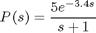
この伝達関数を指定するには、以下を使用します。
num = 5;
den = [1 1];
P = tf(num,den,'InputDelay',3.4)
Transfer function:
5
exp(-3.4*s) * -----
s + 1
予期されたように、P のステップ応答は、遅れのない応答がシフトしたものです。
P0 = tf(num,den); step(P0,'b',P,'r')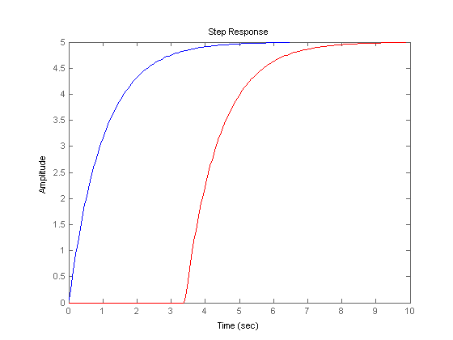
以下のようにプロセス モデルに複数の出力がある場合は、
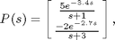
OutputDelay プロパティを使用して、出力チャンネルごとに異なる遅れを指定できます。
num = {5 ; -2};
den = {[1 1] ; [1 3]};
P = tf(num,den,'OutputDelay',[3.4 ; 2.7])
Transfer function from input to output...
5
#1: exp(-3.4*s) * -----
s + 1
-2
#2: exp(-2.7*s) * -----
s + 3
次に、以下のような多入力、多出力のモデルを考えます。
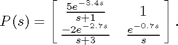
ここでは遅れは I/O ペアごとに異なるため、IODelay プロパティを使用しなければなりません。
num = {5 , 1; -2 1};
den = {[1 1] , 1; [1 3], [1 0]};
P = tf(num,den,'IODelay',[3.4 0;2.7 0.7]);
このモデルをさらに直接的にリテラル値を使用して指定するには、ラプラス変数 "s" を導入し、伝達関数演算を使用します。
s = tf('s');
P = [ 5*exp(-3.4*s)/(s+1) , 1 ; -2*exp(-2.7*s)/(s+3) , exp(-0.7*s)/s ]
Transfer function from input 1 to output...
5
#1: exp(-3.4*s) * -----
s + 1
-2
#2: exp(-2.7*s) * -----
s + 3
Transfer function from input 2 to output...
#1: 1
1
#2: exp(-0.7*s) * -
s
この場合は、InputDelay、OutputDelay、および IODelay プロパティ間での遅れの分散方法が MATLAB® によって自動的に決定されます。
P.InputDelay P.OutputDelay P.IODelay
ans =
0
0
ans =
0
0.7000
ans =
3.4000 0
2.0000 0
関数 TOTALDELAY は、入力値、出力値、および I/O 遅れ値を合計して、入力された値に対し返します。
totaldelay(P)
ans =
3.4000 0
2.7000 0.7000
入力遅れと出力遅れを持つ状態空間モデル
次の状態空間モデルを考えます。
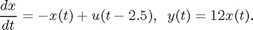
入力信号 u(t) が 2.5 秒遅れていることに注目してください。このモデルを指定するには、以下のように入力します。
sys = ss(-1,1,12,0,'InputDelay',2.5)
a =
x1
x1 -1
b =
u1
x1 1
c =
x1
y1 12
d =
u1
y1 0
Input delays (listed by channel): 2.5
連続時間モデル。
関連モデルは次のとおりです。
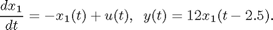
ここでは、出力に 2.5 秒の遅れが発生しています。これは次のように状態式を書き直すことで確認できます。
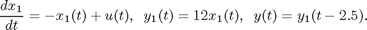
したがって、このモデルは次のように指定できます。
sys1 = ss(-1,1,12,0,'OutputDelay',2.5);
以下で確認できるように、どちらのモデルの I/O 応答も同じであることに注目してください。
step(sys,'b',sys1,'r--')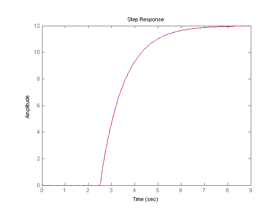
ただし、状態軌跡は異なります。状態 x および状態 x1 は次のように関連付けられているためです。
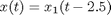
モデルと I/O 遅れの組み合わせ
これまでは、特定の I/O ペアの間の伝達遅れを持つ LTI モデルのみを考えてきました。多くのプロセスのモデル化ではこれで十分ですが、遅れを持つ単純なフィードバック ループを含む、遅れを持つほとんどの制御システムを解析する場合、このクラスのモデルは特殊すぎます。たとえば、次の並列結合を考えます。
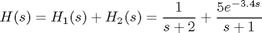
2 つの伝達関数 H1 および H2 を加算しようとするとエラーになります。
H1 = 1/(s+2); H2 = 5*exp(-3.4*s)/(s+1); try H = H1 + H2; catch ME disp(ME.message) % Display the error message end
システムの相互接続は、内部遅延を発生し、状態空間でのみ表現可能です。"ss" コマンドを使用して、モデルの少なくとも 1 つを状態空間に変換してください。
これは、次の結果の伝達関数
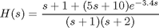
を入力または出力に遅れを持つ通常の伝達関数として表すことができないためです。
I/O 遅れを持つ単純なモデルの範囲を超えるには、H1 および H2 を状態空間 (SS) 表現に変換し、"内部" 遅れという機能を使用する必要があります。SS オブジェクトには、システムの接続時に遅れを追跡する機能があります。遅れの場所、および残りのダイナミクスとの結合に関する構造的な情報は、効率的かつ完全に一般化された方法でエンコードされます。たとえば、上記のモデル H の状態空間表現は次のように求められます。
H = ss(H1) + H2
a =
x1 x2
x1 -2 0
x2 0 -1
b =
u1
x1 1
x2 2
c =
x1 x2
y1 1 2.5
d =
u1
y1 0
(すべての内部遅れがゼロに設定された状態で値を計算)
内部遅れ: 3.4
連続時間モデル。
次の点に注目してください。
- 3.4 秒の遅れは "内部" として示されています。
- A、B、C、Dのデータは、すべての遅れがゼロに設定されているとき (ゼロ次パデ近似) のダイナミクスに対応しています。
内部遅れを持つモデルの伝達関数を確認することは不可能であり、推奨もできません。代わりに時間プロットと周波数プロットを使用してモデルを比較し、検証してください。
step(H1,H2,H) legend('H1','H2','H','Location','NorthWest'), grid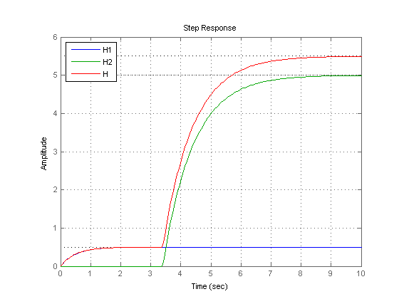
bode(H1,'b',H-H2,'r--') % verify that H-H2 = H1 grid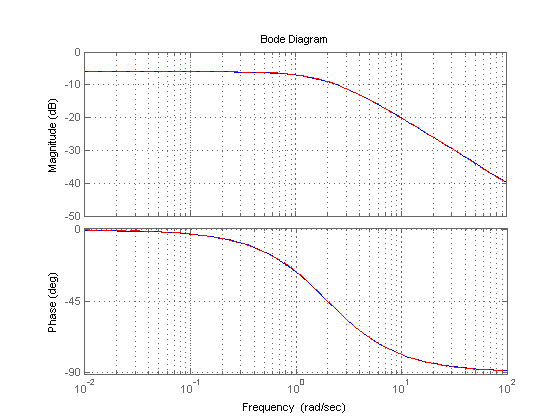
内部遅れを持つモデルの作成
通常、内部遅れを持つ状態空間モデルは、A、B、C、D データと内部遅れのセットの両方を指定して作成されません。その代わりに、より簡単な LTI モデル (I/O 遅れを持つモデル) を直列、並列、フィードバックで接続して、そのようなモデルを作成します。含まれる遅れの数や LTI モデルの接続方法に制限はありません。
たとえば、以下の制御ループを考えます。このプラントは、1 次モデルにむだ時間を付加してモデル化されています。
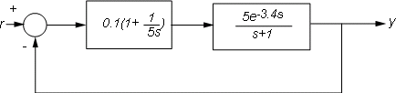
図 1: 遅れを持つフィードバック ループ
状態空間表現を使用すると、r から y への閉ループ応答に対してモデル T を導出して、以下によりシミュレートできます。
P = ss(5*exp(-3.4*s)/(s+1));
C = 0.1 * (1 + 1/(5*s));
T = feedback(P*C,1);
step(T)
grid, title('Closed-loop step response')
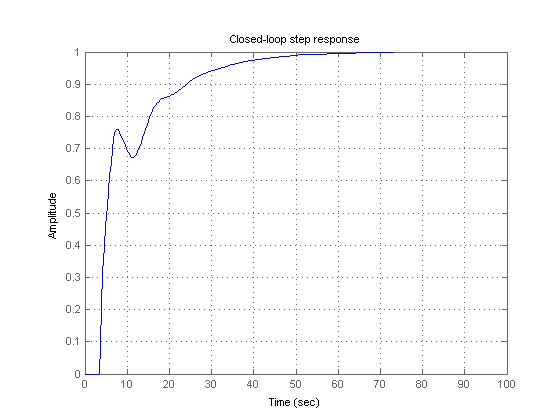 より複雑な相互接続には、各ブロックの入力信号と出力信号に名前を付け、CONNECT を使用して、配線を自動管理できます。たとえば、図 1 の制御ループにフィードフォワードを加えたいとします。
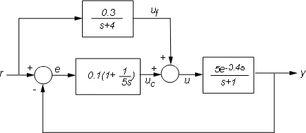
図 2: フィードフォワードおよびフィードバック制御
対応する閉ループモデル T を以下により導くことができます。
F = 0.3/(s+4); P.InputName = 'u'; P.OutputName = 'y'; C.InputName = 'e'; C.OutputName = 'uc'; F.InputName = 'r'; F.OutputName = 'uf'; Sum1 = sumblk('e','r','y','+-'); % e = r-y Sum2 = sumblk('u','uf','uc','++'); % u = uf + uc Tff = connect(P,C,F,Sum1,Sum2,'r','y');
さらに、その応答をフィードバックのみの設計と比較します。
step(T,'b',Tff,'r') legend('No feedforward','Feedforward') grid, title('Closed-loop step response with and without feedforward')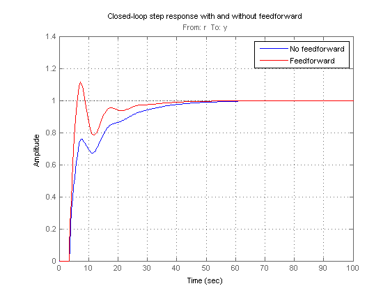
遅れの項を持つ状態空間方程式
遅れを持つ特別なクラスの LTI モデルに、遅れの項を持つ状態空間方程式があります。一般的な形式は次のとおりです。
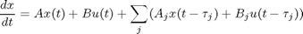
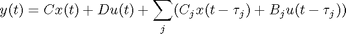
関数 DELAYSS は、このようなモデルを指定するのに役立ちます。たとえば、次のモデルを考えてください。

このモデルを作成するには、各遅れに対して Aj、Bj、Cj、Dj を指定し、DELAYSS を使用してモデルを組み立てます。
DelayT(1) = struct('delay',0.5,'a',0,'b',2,'c',1,'d',0); % tau1=0.5 DelayT(2) = struct('delay',1.2,'a',-1,'b',0,'c',0,'d',0); % tau2=1.2 sys = delayss(-1,0,0,1,DelayT)
a =
x1
x1 -2
b =
u1
x1 2
c =
x1
y1 1
d =
u1
y1 1
(すべての内部遅れがゼロに設定された状態で値を計算)
内部遅れ: 0.5 0.5 1.2
連続時間モデル。
A、B、C、D の値はゼロに設定されているすべての遅れに対するものです。これらの値の応答が、遅れを持つ実際の応答に近くなる必要はありません。
step(sys,'b',pade(sys,0),'r')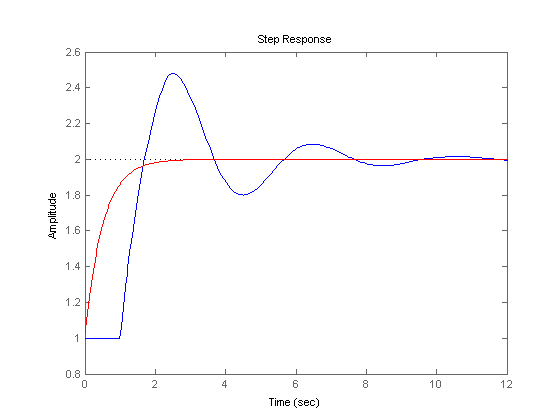
遅れを持つ離散時間モデル
離散時間の遅れは同様に取り扱われますが、わずかな違いがいくつかあります。
- 離散時間の遅れは、通常、サンプリング周期の整数倍です。
- 離散時間遅れは、z=0 での極と等価です。したがって、モデル ダイナミクスに遅れを取り込むことは常に可能です。ただし、遅れを分離しておくと、性能はより良くなります。特に、サンプリング周期に比べて長い遅れを持つシステムでは、性能が向上します。
次の 1 次モデル
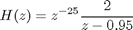
を Ts=0.1 のサンプリング周期で指定するには、以下を使用します。
H = tf(2,[1 -0.95],0.1,'inputdelay',25)
step(H)
Transfer function:
2
z^(-25) * --------
z - 0.95
サンプル時間: 0.1
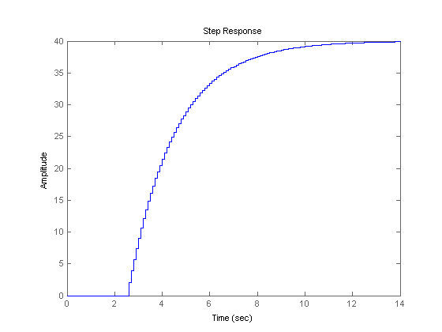 以下は、等価な状態空間表現です。
H = ss(H)
a =
x1
x1 0.95
b =
u1
x1 2
c =
x1
y1 1
d =
u1
y1 0
入力遅れ (チャンネルごとにリスト): 25
サンプル時間: 0.1
離散時間モデル
遅れは極とは別に保持されることに注意してください。次に、g が純粋なゲインである以下のフィードバックループを考えます。
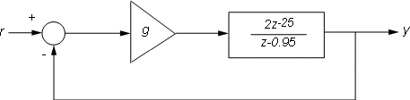
図 3: 離散時間フィードバック ループ
g=0.01 に対する閉ループ応答を計算するには、以下のように入力します。
g = .01; T = feedback(g*H,1) step(T)
a =
x1
x1 0.93
b =
u1
x1 2
c =
x1
y1 0.01
d =
u1
y1 0
(すべての内部遅れがゼロに設定された状態で値を計算)
内部遅れ: 25
サンプル時間: 0.1
離散時間モデル
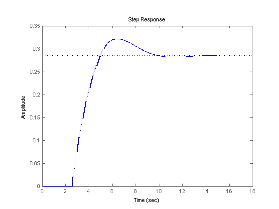 T は、なお 25 サンプルの内部遅れを持つ 1 次モデルです。比較のために、DELAY2Z を使用して、すべての遅れを z=0 での極にマップします。
T1 = delay2z(T); order(T1)
ans =
26
結果のモデルは 26 個の状態を持つので、シミュレーションの効率は悪くなります。T と T1 のステップ応答は、予想どおり完全に一致します。
step(T,'b',T1,'r--')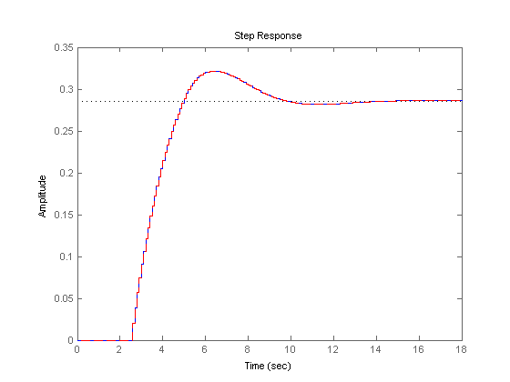
一般に、内部遅れを持つモデルの閉ループ ダイナミクスを解析する場合を除いて、遅れは分離しておくことが推奨されます。
rlocus(H) axis([-1 2 -1 1])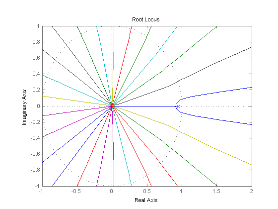
内部遅れを持つ内部状態空間モデル
状態空間オブジェクトは、内部遅れを記録するために一般化された状態空間方程式を使用します。概念的に、そのようなモデルは、2 つの相互接続した部分から構成されます。
- 拡張された I/O セットを持つ通常の状態空間モデル H(s)
- 内部遅れの列
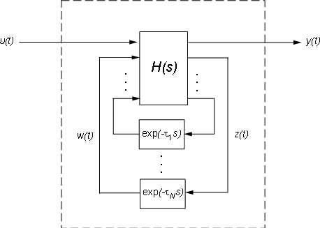
図 4: 内部遅れを持つ状態空間モデルの内部表現
対応する状態空間方程式は次のとおりです。
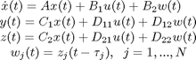
ツールを使用するために、この内部表現に気を使う必要はありません。ただし、何らかの理由で H または行列 A、B1、B2、... を抽出する場合は、getDelayModel を使用できます。次に例を示します。
P = 5*exp(-3.4*s)/(s+1);
C = 0.1 * (1 + 1/(5*s));
T = feedback(ss(P*C),1);
[H,tau] = getDelayModel(T,'lft');
size(H)
2 出力、2 入力、および 2 状態の状態空間モデルを生成します。
H は 2 入力 2 出力モデルで、T は SISO であることに注意してください。逆の操作 (H と tau を組み合わせて T を作成) は setDelayModel で実行されます。